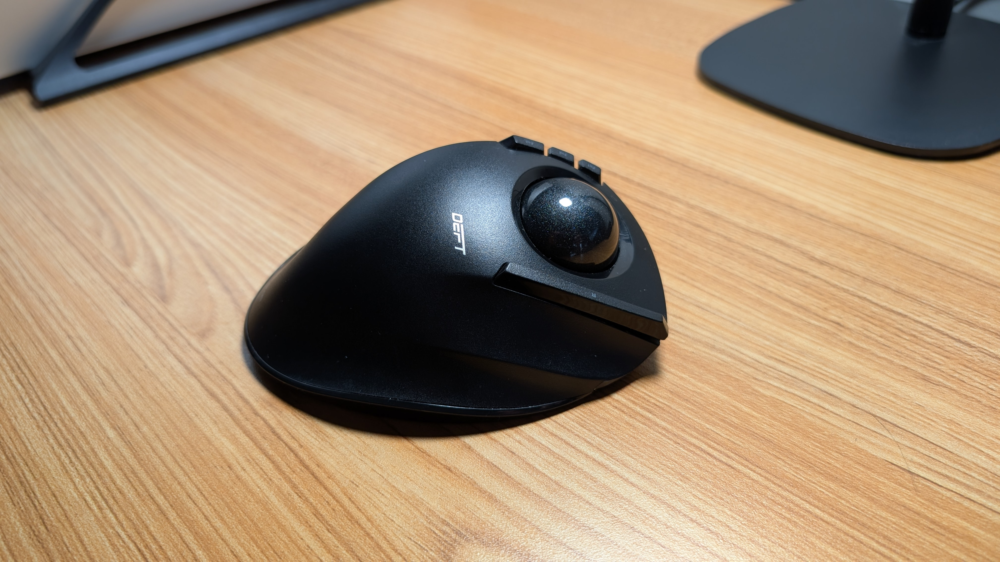
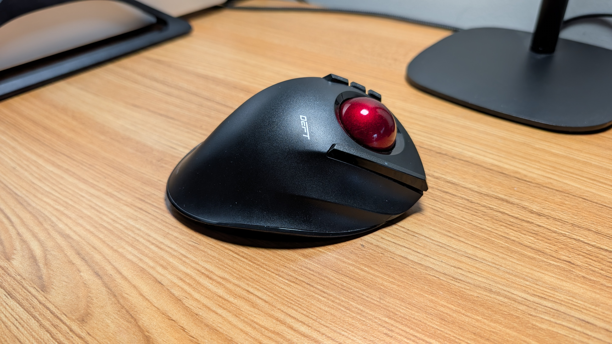

Review: The Elecom Deft M-DT2DRBK — A Diamond in the Rough
January 25, 2026
For trackball enthusiasts, the quest for the "perfect" pointer is often a journey of compromise. We are all essentially chasing the ghost of the legendary Microsoft Explorer Trackball—a discontinued icon that currently commands a staggering $600 new on the secondary market.
Enter the Elecom Deft M-DT2DRBK. I have owned this device since 2018, primarily pairing it with a rotation of Lenovo ThinkPads for work. While its index-finger-style design initially drew me in, its performance left me cold for years. It was the "break glass in case of emergency" backup in my laptop bag—until a simple modification changed the narrative entirely.
The $18 Fix: Redemption in Red
The biggest grievance with the stock Deft has always been the tracking. Out of the box, the cursor felt jumpy, stuttering during precision tasks. For a long time, I chalked this up to mediocre build quality. However, research suggested the culprit was not necessarily all the sensor, but the color of the ball itself.
The Deft ships with a matte black trackball, which is an aesthetic outlier in the industry. I decided to swap it for an official Elecom 34mm red replacement ball. The difference is night and day. Since the swap, the tracking is better. By simply improving the optical contrast for the sensor, the Deft transformed from a frustrating peripheral into a precision tool I actually enjoy using. It is rare that a single component swap can save a device, but here we are.
There is a chance that setting the Deft to high DPI and turning down the pointer speed would have solved the issue; however, I often use a regular mouse more often, and would be changing these settings back whenever not using the Deft. I do not like frequently changing Windows mouse settings.
Ergonomics and Field Notes
The Deft excels in "mobile office" environments—coffee shops and cramped conference rooms where desk real estate is at a premium. Its layout mimics the classic finger-style ergonomics:

- The Layout:My index and middle fingers handle the ball, while the thumb manages the scroll wheel and a massive left-click button.
- The Right Click: This is situated to the right of the ball for the ring finger. While it is positioned well, it feels like the "cheapest" switch on the unit. I personally would have preferred it closer to the thumb.
- The DPI Switch: There is a physical toggle for High/Low DPI. For my 14-inch 1080p ThinkPad screen, the High setting is far too twitchy. On Low, however, it’s the perfect companion for spreadsheet work and general navigation.
- Programmability: While it features extra buttons and forward/back triggers, I find them more of a "nice to have" than a daily necessity.
Design, Ergonomics, and The Budget Reality Check
The Verdict: A New Life for a Portable Classic
Is the Elecom Deft a true successor to the Microsoft Explorer? Not quite—the build quality feels a bit more "consumer-grade" than "industrial-tank." However, at its price point, it offers a wireless, ergonomic experience that is much appreciated.
Before the ball swap, I would have told you to stick to your laptop's trackpad. Now? It is worth a look if you enjoy using trackballs. If you are willing to spend a few extra dollars on a red replacement ball, the Elecom Deft graduates from a backup device to a daily driver. It is finally the trackball I wanted it to be back in 2018.